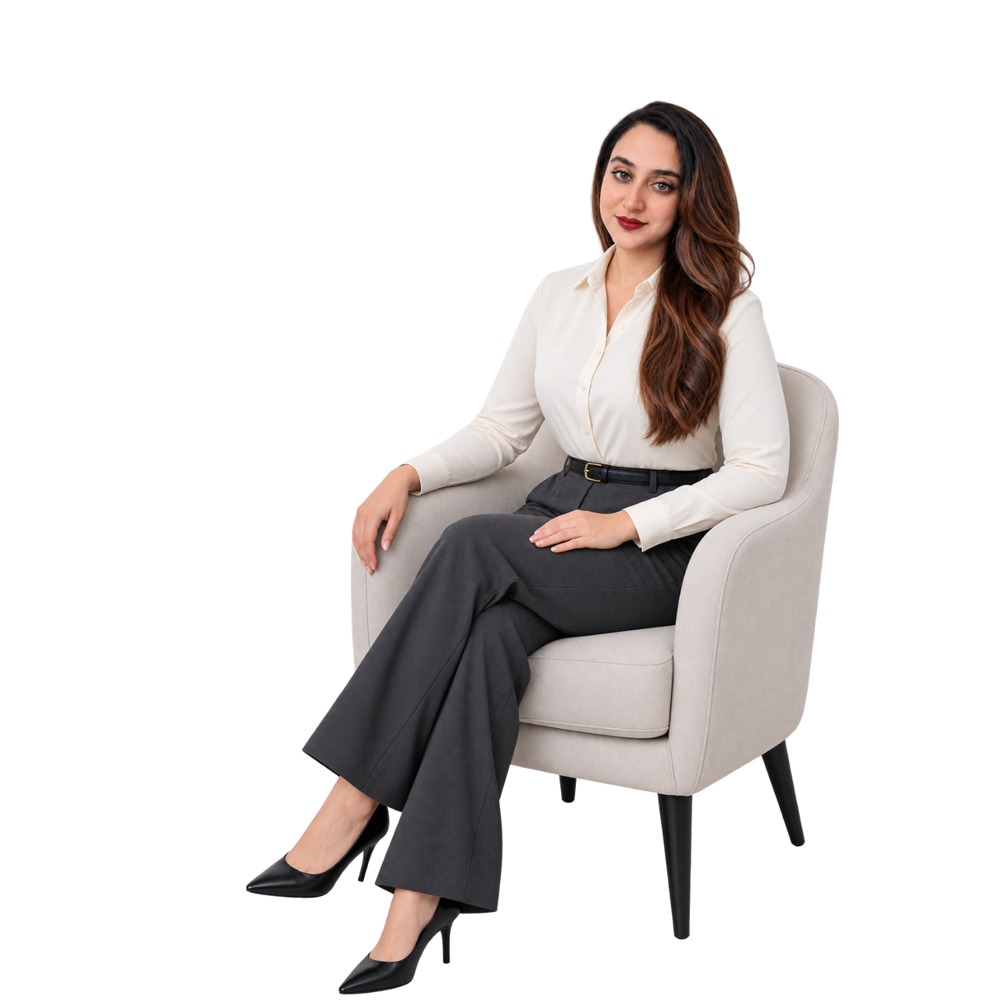
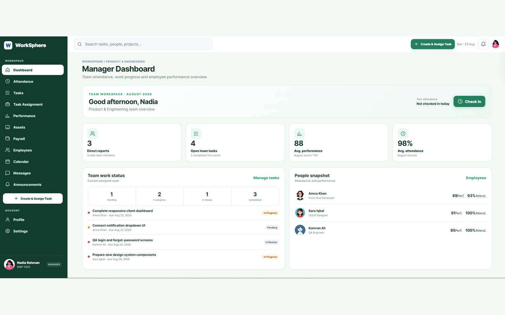
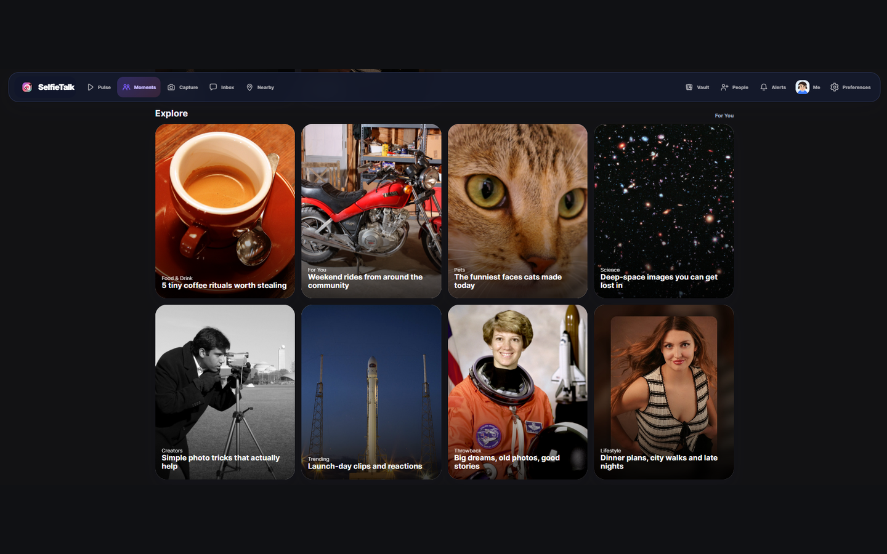
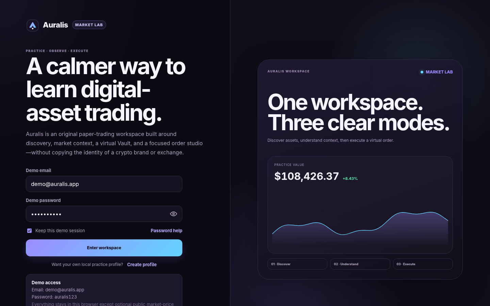
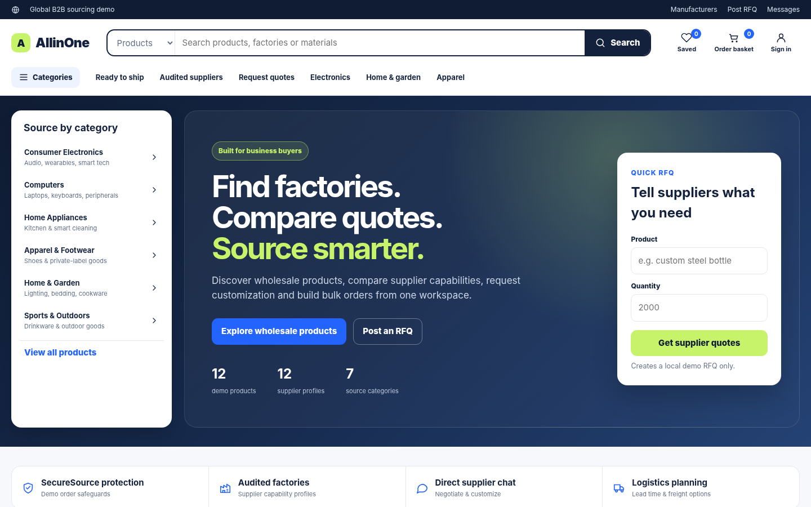
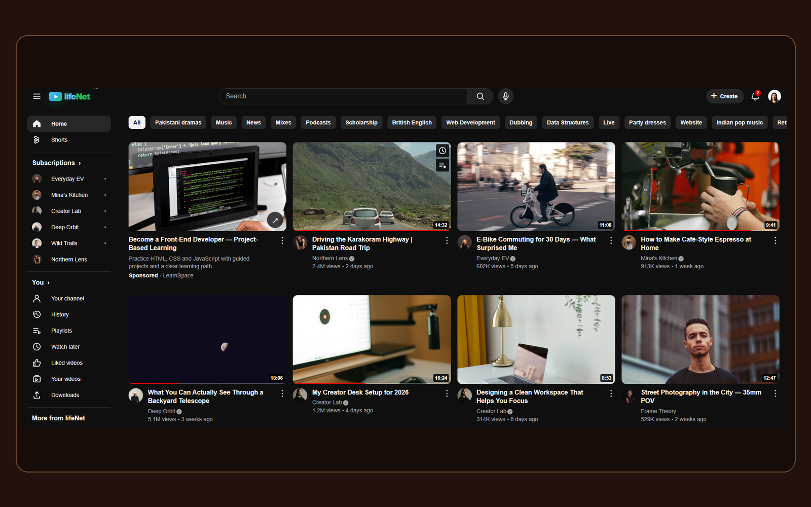

01</>
Front-End
Responsive interfaces and modern web experiences.
- HTML / CSS / Bootstrap
- JavaScript / TypeScript
- React.js / Next.js
- Web Design
| SABAHAT ATTA · SOFTWARE DEVELOPMENT |
Front-End · Back-End · Web Applications · Intelligent Systems
Software engineering professional with experience supporting application development and maintenance across coding, debugging, testing, deployment, performance, integration, databases and APIs.

| ABOUT ME |
My background combines application development and maintenance with a broad technical foundation spanning front-end, back-end, databases, mobile development and programming.
I have supported coding, debugging, testing, deployment, issue resolution, application performance and cross-functional integration. Alongside professional development work, I am continuing graduate-level study in Computer Science and AI Agents & Robots Engineering.
| TECHNICAL SKILLS |
Responsive interfaces and modern web experiences.
Server-side functionality and application connectivity.
Relational database concepts and implementation.
Programming and technical-computing foundation.
End-to-end application work across multiple layers.
Academic focus on intelligent autonomous systems.
| PROFESSIONAL EXPERIENCE |
XingaBots
| FEATURED WEB APPLICATIONS |

Role-based workforce and company LMS covering attendance, task assignment, monthly performance evaluation, company assets, payroll, calendars, messages and management dashboards.
View Live Project ↗
Original social-camera front-end demo with local authentication and connected Capture, Inbox, Moments, Pulse, Vault, Nearby, profile and social discovery experiences.
View Live Project ↗
Browser-based crypto paper-trading workspace built around market discovery, trading context, virtual portfolio tracking, watchlists, order execution and locally stored demo activity.
View Live Project ↗
Global B2B sourcing marketplace demo with product and supplier discovery, MOQ and tier pricing, RFQ workflows, messaging, saved items, bulk cart, checkout and order management.
View Live Project ↗
Responsive front-end video platform demo with local authentication, recommendations, Shorts, subscriptions, search, watch pages, history, Watch Later, liked videos and theme-aware settings.
View Live Project ↗| LIVE WEBSITE PORTFOLIO |
| ACADEMIC & TECHNICAL WORK |
From computer vision and MATLAB to databases, web development and programming, these projects show the range of systems explored throughout my academic work.
Final-year project implementing a software-based skin cancer detection system.
Brain Tumor, Skin Condition, Breast Cancer, and Human Body Shape & Size Detection.
Academic website project designed and implemented for traffic police services.
Database solution developed using Microsoft Access and Oracle.
Database design combined with a line-following algorithm implementation.
Participated in a university Speed Programming Competition in 2019, demonstrating fast problem-solving under time constraints.
| EDUCATION |
Allama Iqbal Open University (AIOU)
IslamabadAir University
Islamabad, PakistanCOMSATS University
Wah Cantt, Pakistan| CONTACT ME |
Open to conversations around front-end, back-end, full-stack and entry-level agentic AI development opportunities.